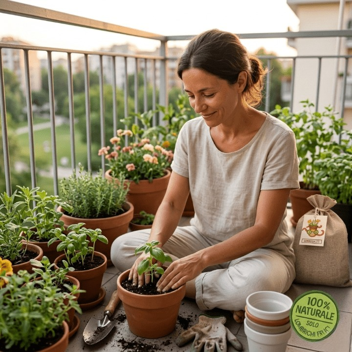
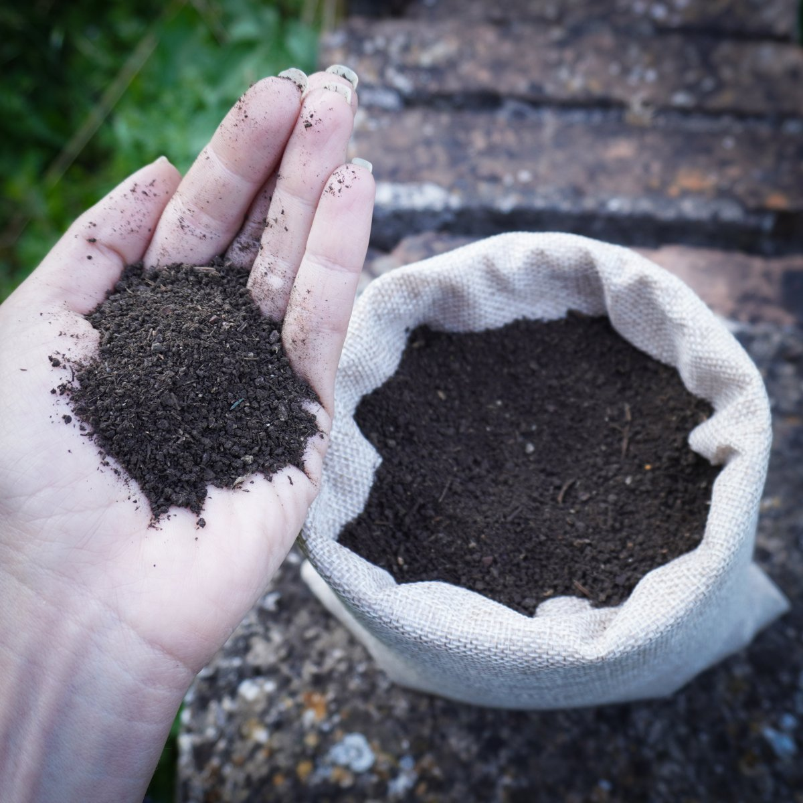
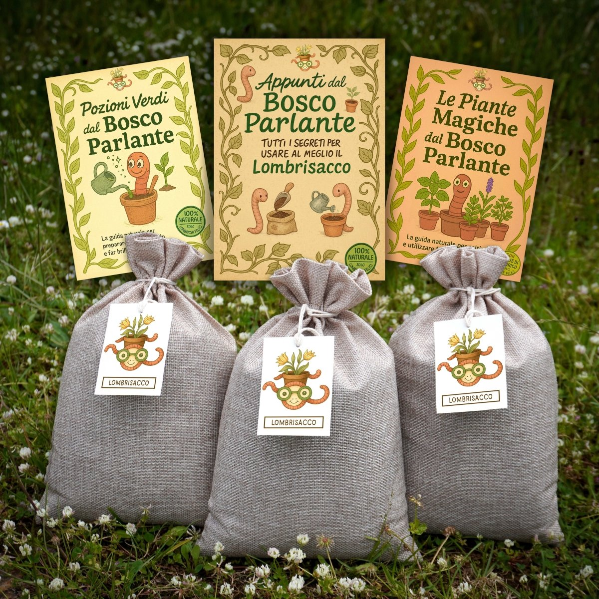
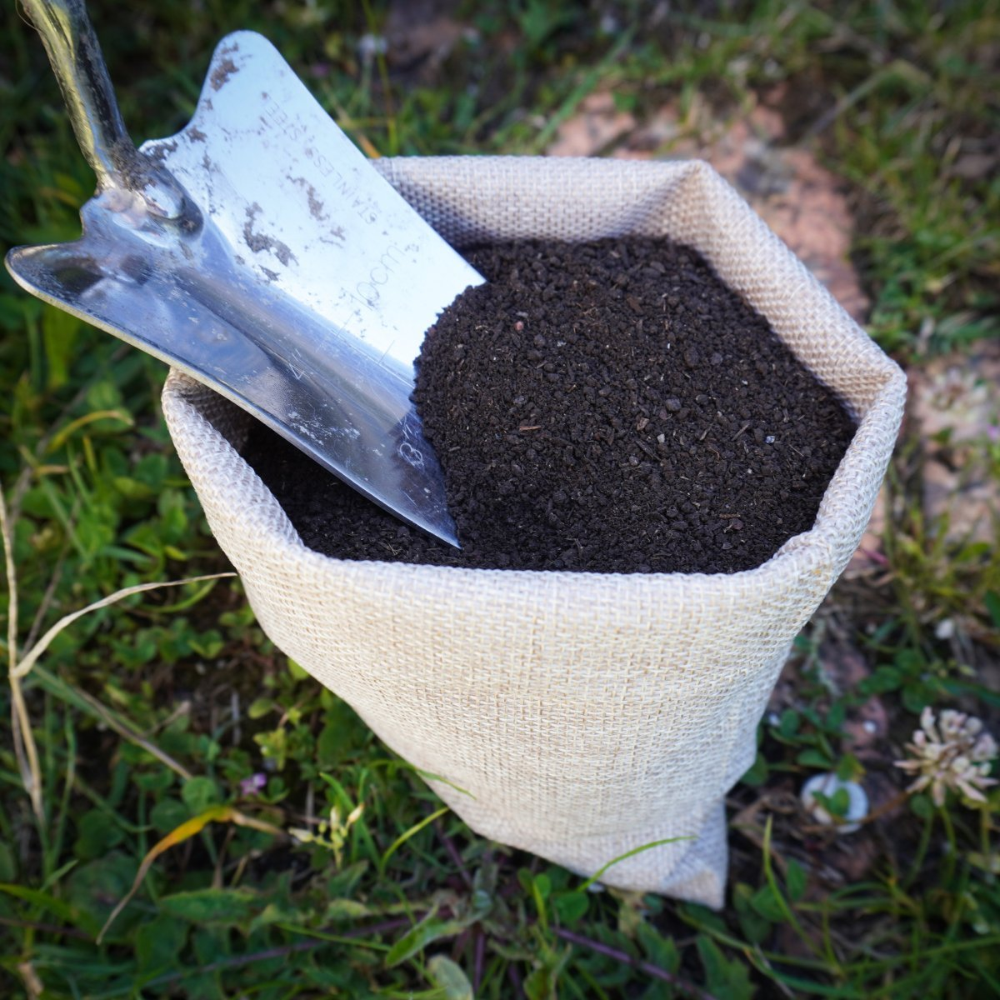

Humus di lombrico prodotto a Montasola, in Sabina. Per chi vuole rimettere le mani nella terra — e farlo nel modo giusto.
C'è un lavoro che avviene nel buio, in silenzio, senza che nessuno lo veda. I lombrichi trasformano quello che era morto in quello che nutre. Non hanno fretta. Non hanno bisogno di istruzioni. Fanno esattamente quello che la terra ha sempre fatto, prima che noi decidessimo di saperne di più.
È una follia, in un certo senso. Una follia sana.
Il Lombricaio Matto nasce da questa logica. Nutrire davvero la terra non è qualcosa di tecnico — è qualcosa di naturale. Un bosco non ha bisogno di istruzioni: cadono le foglie, arrivano i lombrichi, la materia torna terra, la terra torna vita. Da sempre. Noi abbiamo solo smesso di interferire — e abbiamo iniziato ad ascoltare.
Non c'è fretta. La terra non ce l'ha mai avuta. Ogni Kit del Bosco include un foglio — un gesto, tre minuti, prima di mettere le mani nell'humus.
Porta le mani dentro. Senti il peso, la consistenza, il fresco. Materia viva, finemente lavorata nel buio, senza che nessuno lo vedesse. Fermati lì anche solo 30 secondi.
Respira. Lascia che l'odore arrivi senza cercarlo — terra di bosco, qualcosa di antico, qualcosa che riconosci anche se non sai da dove. È l'odore di quello che nutre. Di quello che tiene in vita.
Aggiungi l'humus, mescolalo al terriccio, porta le mani dove serve. Tieni l'attenzione lì — nel gesto, nel contatto. Nutrire è un atto di presenza. Vale per la terra. Vale per tutto.
C'è chi lavora nel buio da milioni di anni senza che nessuno gli abbia mai chiesto niente. Il lombrico non sa di fare qualcosa di straordinario. Lo fa e basta.— Vivien e Raffaele · Montasola, Sabina
Le guide arrivano prima del pacco. Se non le trovi, il QR sul cartoncino di ogni Lombrisacco ti porta direttamente alla pagina di download.
Per il rinvaso, per il nutrimento periodico, per ortaggi, aromatiche, piante da interno e piccoli alberi in vaso.
Il fertilizzante più ricco che puoi preparare a casa. Metodo semplice, risultati immediati.
Come coltivarle partendo dall'humus di lombrico — anche se non hai mai piantato niente in vita tua.
Confezioniamo a mano e spediamo direttamente dal Bosco Parlante. Ogni pacco parte da Montasola — non da un magazzino.
Con il Kit del Bosco accedi alla pagina bonus riservata agli acquirenti — contenuti aggiuntivi, approfondimenti, aggiornamenti diretti da Montasola.
Nutrire è un atto di presenza. Vale per la terra. Vale per tutto.
— Il Bosco Parlante, Montasola, Sabina 39,99€ 3 Lombrisacchi · 3 guide digitali · Richiamo della Terra · Spedizione gratuita Porta il bosco a casa tua Confezionato a mano a Montasola · Produzione propria del Bosco Parlante